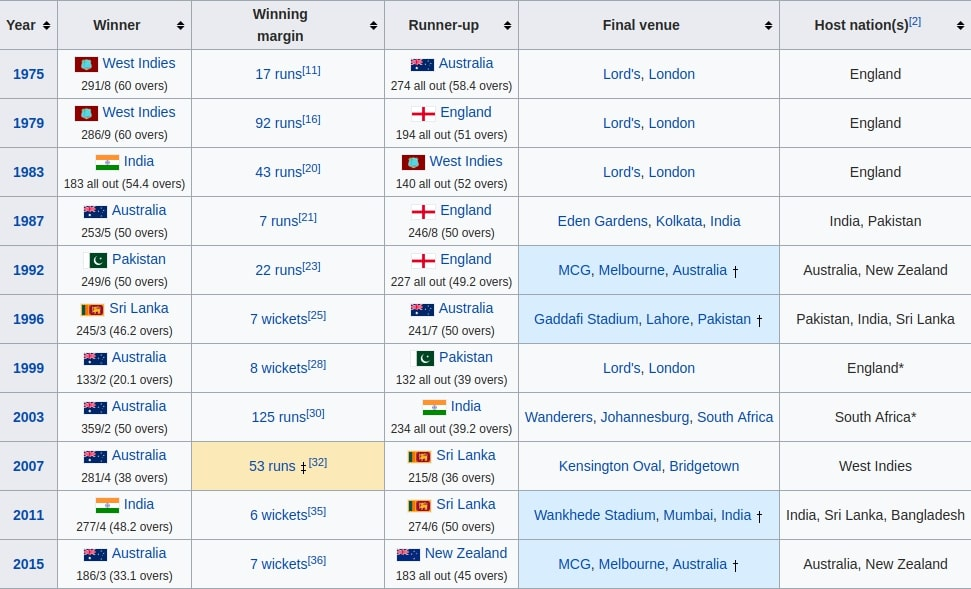

| Topics |
|---|
| History of ICC |
| Members Of The ICC |
| Cricket World Cup |
| Cricket World Cup 2019 |
| INDIA |
| 14th July 2019 |
The International Cricket Council (ICC) is the global governing body of cricket. It was founded as the Imperial Cricket Conference in 1909 by representatives from Australia, England and South Africa. It was renamed as the International Cricket Conference in 1965, and took up its current name in 1989. It has 104 cricket playing nations as members including 11 full members and other as associate members. It organises world championship events such as Cricket World Cup, Women's Cricket World Cup, ICC T20 World Cup, ICC Women's T20 World Cup, ICC Champions Trophy and Under-19 Cricket World Cup.
On 30 November 1907, Abe Bailey, the President of South African Cricket Association, wrote a letter to the Marylebone Cricket Club's (MCC, England) secretary, F.E. Lacey. Bailey suggested the formation of an 'Imperial Cricket Board'. In the letter, he suggested that the board would be responsible for formulation of rules and regulations which will govern the international matches between the three members: Australia, England and South Africa. Bailey, wanted to host a Triangular Test series between the participant countries in South Africa. Australia rejected the offer. However, Bailey did not lose hope. He saw an opportunity of getting the three members together during the Australia's tour of England in 1909. After continued lobbying and efforts, Bailey was successful.
On 15 June 1909, representatives from England, Australia and South Africa met at Lord's and founded the Imperial Cricket Conference. A month later, a second meeting between the three members was held. The rules were agreed amongst the nations, and the first ever Tri-Test series was decided to be held in England in 1912.
In 1926, West Indies, New Zealand and India were elected as Full Members, doubling the number of Test-playing nations to six. After the formation of Pakistan in 1947, it was given Test status in 1952, becoming the seventh Test-playing nation. In May 1961 South Africa left the Commonwealth and therefore lost membership.
The ICC Cricket World Cup is the international championship of One Day International (ODI) cricket. The event is organised by the sport's governing body, the International Cricket Council (ICC), every four years, with preliminary qualification rounds leading up to a finals tournament. The tournament is one of the world's most viewed sporting events and is considered the "flagship event of the international cricket calendar" by the ICC.
The first World Cup was organised in England in June 1975, with the first ODI cricket match having been played only four years earlier. However, a separate Women's Cricket World Cup had been held two years before the first men's tournament, and a tournament involving multiple international teams had been held as early as 1912, when a triangular tournament of Test matches was played between Australia, England and South Africa. The first three World Cups were held in England. From the 1987 tournament onwards, hosting has been shared between countries under an unofficial rotation system, with fourteen ICC members having hosted at least one match in the tournament.
India had performed brilliantly in the group stage and was leading the points table despite playing one match less. But a major catastrophe struck the team in the semi-finals when the top order collaped early. Dhoni and Jadeja showed India hope but the tragic run-out of Dhoni at the wrong time disheartened many India fans. Despite Jadeja's excellent knock of 77 runs, India was defeated by 18 runs.
Both teams remained unchanged from their semi-final matches; New Zealand decided that the line-up that beat India against the odds would work in their favour in the final, while England's Jason Roy avoided suspension after his show of dissent in their semi-final match against Australia to open the batting for the hosts.
Some early rain slightly delayed the toss, with the match starting at 10:45, 15 minutes later than scheduled. It was feared that the rain would interfere with the match, but it cleared up quickly, although the overcast conditions and wet grass changed the dynamic of the toss. New Zealand won the toss and decided to bat first.
Martin Guptill and Henry Nicholls opened the innings for New Zealand, with Nicholls scoring his first half-century of the tournament.[24] A further 30 runs from captain Kane Williamson, and 47 from wicket-keeper Tom Latham, helped New Zealand to a total of 241/8 from their 50 overs. Chris Woakes and Liam Plunkett took three wickets each for the hosts.
Defending a middling score, the New Zealand bowlers bowled effectively, hampering England's top order, with only Jonny Bairstow managing more than a start with 36. With the loss of their top order, England fell to 86/4 in the 24th over; however, a century partnership between Ben Stokes and Jos Buttler for the fifth wicket got them back into the game before Buttler was caught. But with five overs to play, England still required another 46 runs and the bottom order were forced to bat more aggressively. Stokes managed to farm the strike and, more crucially, score runs, leaving England needing 15 to win from the final over, two wickets still in hand. After two dot balls, Stokes hit a six into the stands at deep mid-wicket, bringing their score to 233/8.
From the third-last ball of the final over, Stokes drove the ball into mid-wicket. Guptill fielded the ball and threw it back to the striker's end as Stokes was returning to complete a second run; however, as Stokes dived for the crease, the ball deflected off his bat and to the boundary behind the wicket, resulting in four runs being added to the two that Stokes had run. The final two deliveries went for a run each, but England lost their last two wickets going for a second run each time.
With the scores tied at 241, the match went to a Super Over. England returned Stokes and Buttler to the crease, and they handled Trent Boult's bowling to accumulate 15 runs without loss, with both batsmen contributing a boundary four. For New Zealand, Guptill and Neesham went up to face Jofra Archer needing at least 16 runs to claim the title. Archer's over started badly, beginning with a wide, and a steady accumulation of runs, along with a six from Neesham off the third ball, left New Zealand needing two from the final delivery. Facing his first ball of the Super Over and the last of the match, Guptill hit the ball out to deep mid-wicket and tried to scamper back for the winning run, but Roy's throw in to Buttler was a good one, and Guptill was run out well short of his crease. New Zealand finished with 15 runs, the Super Over tied, but England's superior boundary count (26 to New Zealand's 17) meant they claimed the World Cup title for the first time in four final appearances. Stokes earned Man of the Match honours with his unbeaten 84, plus seven runs in the Super Over